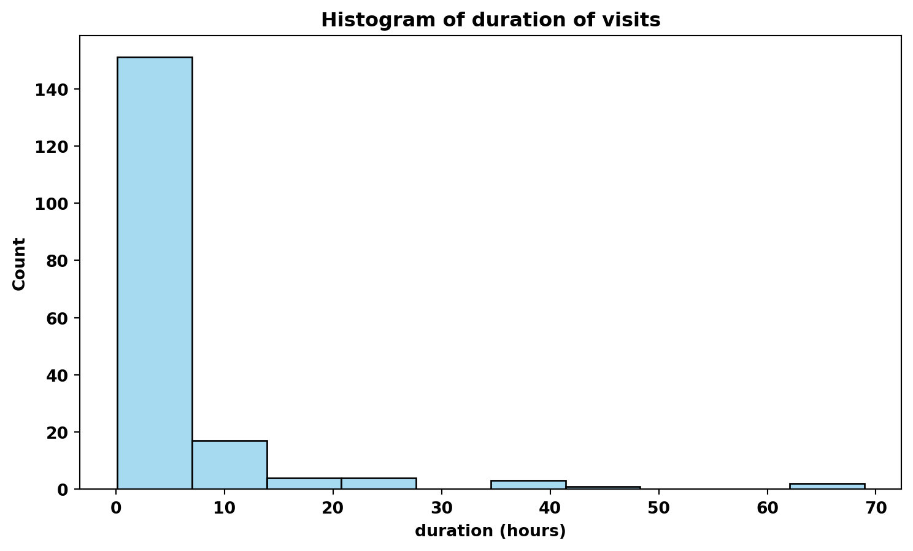
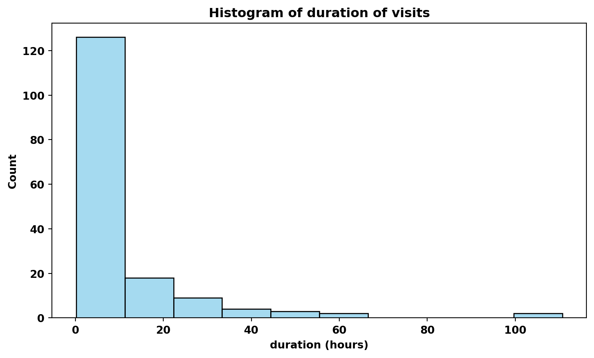
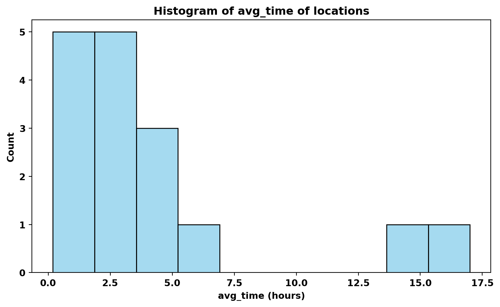
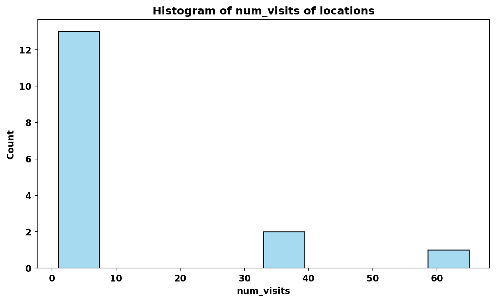

# import code from modules
from raster_based_hotspots import RasterBasedPerson, RasterBasedUnionGroup, RasterBasedIntersectGroup
from point_based_hotspots import PointBasedPerson, PointBasedUnionGroup, PointBasedIntersectGroupSocial Hotspot Analysis and Visualization
Patterns & Trends in Environmental Data / Computational Movement Analysis Geo 880 — Semesterproject FS23
Abstract
The aim of this project is to identify and characterize meeting places, locations where people spend time in close proximity at the same time. As such, we investigate and operationalise the spatio-temporal clustering of individuals to uncover patterns of social interaction. A raster-based approach using a hexagonal grid and a point-based approach using a kernel density estimation (KDE) are compared. The tracking data utilized for this analysis is derived from the Posmo Project app, collected from a cohort of students enrolled in the Computational Movement Analysis course.
1. Introduction
Trajectories obtained from geotracking data provide deep insights into the personal and social behaviour of individuals. They reveal information about daily routines, visited locations or social interactions, the analysis of which can be of great value for a variety of applications, for example in urban development[1] or emergency response planning[2].
However, geotracking people and analysing the data produced in the process also carries highly important ethical implications[3] . Geotracking data narrates the life of a person from a spatial perspective and can reveal very personal and intimate information about them[4]. As such, it represents a profound intrusion into the privacy of individuals, which is why it is important to ensure the protection of privacy when using geotracking data.
In our project, we develop a methodology to identify locations visited by individuals or groups of individuals. Given that this task involves revealing potentially sensitive data, the focus is on how we can do this in a way that ensures the privacy of the people involved. For this purpose, two approaches will be contrasted to identify the trade-off between accuracy and privacy. Using a raster-based approach, an inherent obfuscation of the visualised data is provided through the definition of the size of the raster cells. A point-based approach, on the other hand, demonstrates how geotracking data can be used to produce high-resolution results and why additional obfuscation mechanisms are necessary to preserve the privacy of the subjects.
This project will therefore address the following two research questions:
How can visited locations be extracted from geotracking datasets and how can we study the behaviour of single or multiple individuals from them?
How does a raster-based approach compare to a point-based approach in terms of spatial accuracy and the protection of privacy?
2. Methods
In this section, we present a method for identifying locations that have been visited by individuals or groups of individuals. To this end, in a first step we address the extraction of these locations from geotracking data of individual persons. In a second step, we combine data from multiple individuals in such a way that we can learn more about the collective behaviour of a group of people using Boolean operations. This entails, for one, the union and, for another, the intersection of the visits made by the individuals. What these Boolean operations mean in the context of our project, we will explain in more detail later.
The choice of data structure in our methodology could potentially influence the results in a significant way. A raster-based approach is simpler to implement but is susceptible to the Modifiable Areal Unit Problem (MAUP) and thus can lead to statistical bias in the results. A point-based approach, on the other hand, can potentially lead to geographically very accurate results, which in turn amplifies data privacy concerns. To investigate the role of data structure choice in our methodology, both approaches were implemented in the form of two separate Python modules.
2.1. Definitions
Before we explain the functioning of our method, we need to define some terms that are relevant to it.
2.1.1. Visit
A visit is an event during which a person remains stationary for a minimum amount of time. Because a person will make minor movements during a visit, such as going to the bathroom or taking a walk in the garden, a radius must be defined in which the person is allowed to move during a visit without it being considered the end of the visit. Depending on this radius, we must also specify the minimum duration of the visit. For a larger radius, a larger minimum duration must be defined, otherwise slow movements in transit may get classified as visits. For our implementation, we determined a radius of approximately half a kilometre along with a minimum duration of 10 minutes. In comparison, a person traveling at a walking speed of 5 kilometres per hour away from the visit location would have a minimum of 6 minutes if walking in a straight line or a maximum of 8.5 minutes if moving around blocks.
2.1.2. Location
A location is a geographical entity at which visits can occur. A person can visit a location any number of times, which allows different statistics to be calculated for the location, such as number of visits, average visit time, or total visit time.
2.1.3. Boolean Operations
When speaking of Boolean operations in the context of our project, we refer to operations on individual sets of visits performed by people. By union we then understand the combining of visits made by different individuals into a new set of collective visits. This gives us a collection of visits made by all members of a group, regardless of whether they were made alone or in company. For the intersection, on the other hand, we identify the visits in which a minimum number of members of the group participate. This means that the visits of the individuals participating in an intersection visit must have the same location and temporally overlap for a minimum duration.
2.2. Implementation
2.2.1. Data
As part of the course in the context of which this project is being conducted, participants tracked their position over a period of two to three months using the Posmo Project app. The app records the trajectories of the tracked individuals as a list of time-stamped coordinates, usually at 10-second intervals. In addition to date, time and coordinates, the app also tries to assign a placename and the means of transport used to each data point, which is, however, not relevant to our project.
2.2.2. Extracting Visits
Visits are extracted from records of individual people by iterating chronologically through all data points to identify sets of points that together define a visit based on certain criteria. Beginning at the first data point, a temporary visit object is initialized for which its geographic location is determined. For subsequent data points, we then determine whether they can be attributed to this temporary visit object by using a distance criterion. Once a data point no longer meets this distance criterion, they are considered to have moved away from the visited location and the visit is therefore terminated. When a visit is terminated, we then check whether it meets the minimum duration criterion. If it does, it is considered a valid visit and is added to the person’s list of visits. If the visit was too short, we assume that the person was in transit and the temporary visit object is discarded. Regardless of whether the minimum duration criterion is met, each time a temporary visit is terminated, a new one is initialized and the algorithm proceeds to the next data points.
The implementation of the distance criterion differs with the data structure used. While both approaches read in the same data sets, they differ in how the data points are represented. In the raster-based approach, each data point is assigned a hexbin ID based on its coordinates, using the H3 library developed by Uber. Each hexbin ID represents a geographic hexagonal cell predefined by H3, which can vary in size depending on the specified resolution. In our implementation, we use a resolution level of 8, which corresponds to hexagons with a circumradius of 531 meters[5]. Making the approximating assumption that the data points have a mean distance of 531 meters to all cell boundaries, we then define the distance criterion with a cell being exited. This means that the distance criterion is no longer satisfied if the hexbin ID of a following data point is different from the previous one, which then leads to the termination of the visit.
In the point-based approach, on the other hand, the data points are represented as point entities carrying the original coordinates. The distance criterion then is defined by a distance calculation between the new data point and the centroid of the points associated with the temporary visit object. For comparability purposes, we use a distance threshold of 531 meters, corresponding to the circumradius of the hexagons in the raster-based approach. If the new data point has a distance less than the threshold from the visit centroid, we attribute it to the temporary visit object, which then also leads to a shift in the position of the centroid. If, on the other hand, the new data point is farther away from the visit centroid than the threshold allows, the visit is terminated and the algorithm proceeds with a next visit.
2.2.3. Defining Locations
As people may visit a location more than once, we can calculate visit statistics for these locations, like for example the number of visits, the average visit duration or the total visit duration. To do this, we need to group the visits by their locations and then calculate the statistics based on these groupings. In the raster-based approach, this is relatively simple. Because the visits have already been assigned to geographic units as a result of the rasterization into hexagons, the visits can simply be grouped using their hexbin ID.
With the point-based approach, it is a bit more complex. Here, the visits each have a location in the form of a point entity created by taking the centroid of the data points associated with the visit. Thus, the likelihood that visits will differ slightly in their point coordinates, even though they may refer to the same location, is very high. Therefore, in order to group visits with similar coordinates, DBSCAN clustering is performed with a maximum distance parameter between two visits of 531 meters and a minimum sample number of 1 visit per cluster. This results in each visit being assigned a cluster ID, by which the visits can then be grouped. The visits in a cluster then form a unique location whose coordinates are defined by the centroid of the coordinates of the visits in the cluster. The statistics mentioned above can then be calculated for these locations created from visit clusters.
2.2.4. Boolean Operations
To perform Boolean operations between multiple people, corresponding group objects are created to which individuals can be added. The union then simply concatenates the visits of the individual people. Using this new collection of visits, the locations and their statistics can then be calculated in the same way as for individual persons.
The intersection requires a more complex algorithm. We now want to specifically identify visits in which a minimum number of members of the group participated. That means that several people must each have made a visit to the same place, which, additionally, overlap in time. Because participants in a common visit may have different arrival and departure times, we cannot simply compare the visits, but instead must examine how they temporally overlap. To accomplish this, we divide the individual’s visits into 1-minute segments and round them to the last full minute. This allows us to assign a location to each minute that an individual was on a visit. We then group these visit minute segments of all members of a group by location and time and then count the number of segments in each minute for every location. That way we then obtain counts of the number of people present for each pair of location and time. Based on these counts, we can then identify visits where a minimum number of people were together for a minimum amount of time. In the same way as before, we can then use these newly defined visits to calculate the locations and their statistics.
2.2.5. Visualizing Locations
To visualize the visit locations of individuals or groups of individuals, the locations can be mapped by using the three statistics mentioned above. For the raster-based approach, we create and map hexagon polygons that correspond to the geographic extent of the H3 hexbins and colour them according to the statistical attribute. In the point-based approach, locations are in the form of point entities. We thus visualize them using a heat map with the statistical attribute used to weight the locations. Because the radius and blur of the heatmap change depending on the zoom level, a maximum zoom level was specified with the goal of obfuscating the locations and preserving the privacy of the participants as much as possible.
3. Results
In this section, we present an example that visualizes the visit locations using the data of one of the authors, referred to as X. The visualization demonstrates the effectiveness of our methodology in identifying significant visit patterns and locations.
# create instance and read in data of an individual for raster- and point-based approach
raster_based_person = RasterBasedPerson.from_csv(f'data/posmo0.csv', 8)
point_based_person = PointBasedPerson.from_csv(f'data/posmo0.csv', 0.5314)# map raster locations based on how often a location was visited
raster_based_person.map_locations(column='num_visits')Make this Notebook Trusted to load map: File -> Trust Notebook
We observe that hexagons with the highest number of visits are near Wil (SG), Zurich and St. Gallen. These locations correspond to the home and workplace of X. Different from our expectation, the university campuses cannot be differentiated from other visits just by how often it was frequented.
# heatmap of locations based on how often a location was visited
point_based_person.map_locations(column='num_visits')Make this Notebook Trusted to load map: File -> Trust Notebook
For the point-based approach, the heat map is highly influenced by the scale at which it is viewed. As we zoom out, the areas of interest become larger in comparison to the static cell size used in the raster-based approach. Additionally, the behavior of certain locations in the point-based approach is not consistent across different scales, indicating a more dynamic representation of visit locations. For instance, Romanshorn is shown at smaller scales, then disappears, only to reappear again when further zoomed out. There are areas that display a higher density in the heat map than the raster-based approach (e.g. Romanshorn). Wil and Zurich have a higher density all scales, while St. Gallen is displayed at all scales, but is not distinguishable from other locations with few visits.
# instantiate the union class for the raster- and point-based approach
raster_based_union_group = RasterBasedUnionGroup()
point_based_union_group = PointBasedUnionGroup()
# instantiate the intersection class for the raster- and point-based approach
raster_based_intersection_group = RasterBasedIntersectGroup()
point_based_intersection_group = PointBasedIntersectGroup()# loop through all individuals
for i in range(16):
# instantiate raster- and point-based person
raster_based_person = RasterBasedPerson.from_csv(f'data/posmo{i}.csv', 8)
point_based_person = PointBasedPerson.from_csv(f'data/posmo{i}.csv', 0.5314)
# add the person instance to the union group
raster_based_union_group.add_person(raster_based_person)
point_based_union_group.add_person(point_based_person)
# add the person instance to the intersection group
raster_based_intersection_group.add_person(raster_based_person)
point_based_intersection_group.add_person(point_based_person)# compute visits for union groups
raster_based_union_group.compute_visits()
point_based_union_group.compute_visits()
# compute visits where ate least 2 people are present for intersection groups
raster_based_intersection_group.compute_visits(n_min=2)
point_based_intersection_group.compute_visits(n_min=2)# map locations of union group from raster-based approached
raster_based_union_group.map_locations(column='num_visits')Make this Notebook Trusted to load map: File -> Trust Notebook
The Wädenswil Campus exhibits the highest visitation frequency, with Zurich City and Irchel Campus following suit.
# heatmap of union group from point-based approached
point_based_union_group.map_locations(column='num_visits')Make this Notebook Trusted to load map: File -> Trust Notebook
The university campuses are frequented most often in the union heat map. There is also a rather high density north of the Zürichsee between Meilen, Rapperswil and Wetzikon.
The visitation patterns are consistent between both methods except in Richterswil. While the raster-based method has cells between Wädenswil and Richterswil, the union heat map only highlights the Campus Wädenswil.
raster_based_intersection_group.map_locations(column='num_visits')Make this Notebook Trusted to load map: File -> Trust Notebook
Unsurprisingly Wädenswil Campus has the highest number of intersection. This is followed by Wollishofen and Kilchberg; Campus Irchel and Zurich City each show slightly fewer number of visits.
point_based_intersection_group.map_locations(column='num_visits')Make this Notebook Trusted to load map: File -> Trust Notebook
Zurich City exhibits an overwhelmingly high density of visitation. The regions Wollishofen and Wädenswil Campus also demonstrate a noteworthy density in comparison to other intersecting areas. Notably, the point-based method reveals smaller areas of intersection than the raster-based approach. For example, Zurich City represented by a single intersection area in the point-based method, whereas it encompasses six hexagonal cells in the raster-based method.
Besides Richterswil, which is missing in the point-based intersection, both methods show the same intersection areas.
# visualise distribution of duration of visits for raster-based method
raster_based_intersection_group.plot_histogram('visits','duration')
# visualise distribution of duration of visits for point-based method
point_based_intersection_group.plot_histogram('visits','duration')
Both methods exhibit a skewed distribution with a high frequency of short length visits.
# visualise distribution of average duration of intersection meetings
raster_based_intersection_group.plot_histogram('locations','avg_time')# visualise distribution of average duration of intersection meetings
point_based_intersection_group.plot_histogram('locations','avg_time')
The raster-based method has a much higher number of intersection locations, with about 75% having an average duration of less than 2.5 hours. In comparison, the the point-based method has less than 20 intersection locations with half being under 3 hours long.
# visualise distribution of number of visits of intersection meetings for raster-based method
raster_based_intersection_group.plot_histogram('locations','num_visits')
# visualise distribution of number of visits of intersection meetings for point-based method
point_based_intersection_group.plot_histogram('locations','num_visits')
While most locations were visited less than 10x in both methods, the point-based method has intersection locations that were visited 1.5 - 2x more often than in the raster-based method.
Upon closer examination of the top three frequently visited intersection locations, notable distinctions emerge. While Zurich City has a visitation count exceeding 60x, it was not even in the top three visited intersections in the raster-based method. Adliswil and Wädenswil both have approx. 35x visits with a duration of 16 hours in the point based method. Conversely, Wädenswil was the most visited intersection location with average duration of 5 hours. Adliswil and Wollishofen register 17 visits each, with average durations of 23 hours and 2.5 hours, respectively.
4. Discussion & Conclusion
The comparison between the raster- and point-based methods reveals certain characteristics and considerations inherent to each approach. Both methods effectively capture comparable visitation locations encompassing domains such as residential, occupational, and educational settings.
It is important to acknowledge the parameters chosen for the method comparison were determined without specific literary references, and only analyzed with a 531 metre search radius. To address the MAUP, further analyses should be conducted at different scales to explore the impact on the results. Additionally, conducting a Moran’s I analysis could provide insights into the optimal bandwidth for clustering visits[6].
The raster-based method provides a straightforward and easily interpretable spatial depiction of visits and meeting areas. The raster allows for simpler comparisons between different maps, ensuring consistent results, as the cell size remains constant regardless of the zoom level. The ambiguity that an actual visit can be anywhere withing the cell serves as privacy mechanism by obfuscating the exact location.
On the other hand, the point-based method employs a weighted KDE, generating a smooth and continuous surface map that enables flexible spatial representation. Furthermore, this approach captures more fine-grained details than the raster-based method. This is coupled with a privacy issue, since locations are directly derived from the GPS locations. Under the assumption that the GPS data from Posmo is accurate, it would be possible to accurately determine a precise location of a visit. To counter this, we set a maximum zoom level. Lastly, the scale-dependency of the results complicate the interpretation of the results.
Contributions
- Diego Gomes
- Implementation for raster-based method
- Introduction, Methods
- Aiyana Signer
- Implementation for point-based method
- Introduction, Results, Discussion
References
[1] Kucukpehlivan et al. (2023). Determination of the impacts of urban-planning of the urban land area using GIS hotspot analysis. Computers and Electronics in Agriculture, 210, 107935.
[2] Jones et al. (2008). Global trends in emerging infectious diseases. Nature 451, 990–993.
[3] Apte et al. (2019). Ethical considerations in the use of GPS-based movement tracking in health research - lessons from a care-seeking study in rural west India. Journal of global health, 9(1), 010323.
[4] Cheung (2014). Location privacy: The challenges of mobile service devices. Computer Law & Security Review, 30(1), 41–54.
[5] Uber Technologies, Inc. (2023). Tables of Cell Statistics Across Resolutions: Edge lengths. https://h3geo.org/docs/core-library/restable/#edge-lengths
[6] Hot Spot Spatial Analysis (2022). Columbia Mailman School of Public Health. https://www.publichealth.columbia.edu/research/population-health-methods/hot-spot-spatial-analysis